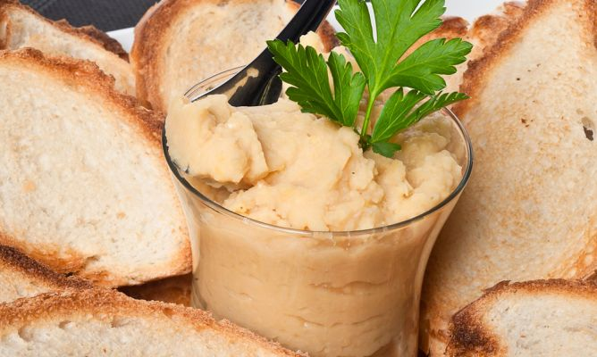
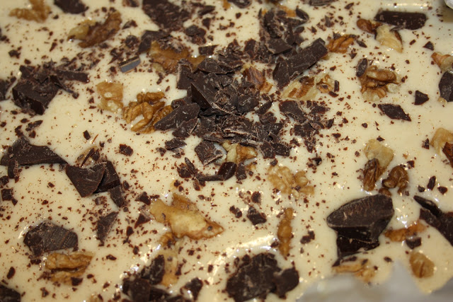
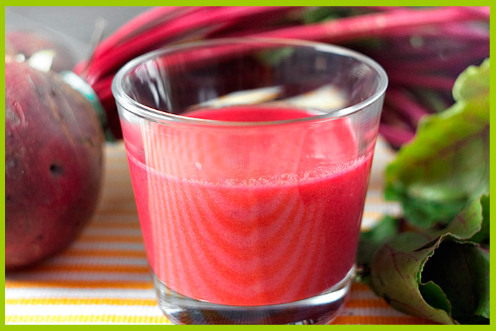

Hummus
Esta receta nos la ha dado una amiga, Ana, después de que probaramos y deboraramos el hummus que nos había preparado. Esperamos que lo disfrutéis como nosotros.
Próximamente vamos a ofreceros la receta para hacer fácilmente una deliciosa Mayonesa de anacardos.
- Ingredientes:
- 500 gr de garbanzos
- 2 dientes de ajo
- 40 ml de zumo de limón
- 1 buen chorreón de aceite de oliva virgen extra
- 2 cucharadas pequeñas de comino
- 2 cucharadas pequeñas de pimentón (dulce ó picante, o una de cada, según gustos)
- sal y pimienta
- Preparación:
- Dejar los garbanzos en remojo unas 24 horas.
- Cocer los garbanzos hasta que estén un poco blandos y escurrirlos muy bien.
- Dejar que se enfrien un poco y triturar junto con el resto de ingredientes, echando más aceite si resulta necesario para conseguir la textura deseada.
- También puedes cambiar los 500 gr de garbanzos por 60 gr, e incluir 140 gr de almendras o anacardos y 50 r de sésamo, como una nueva versión

Helado de Plátano
Para estos días en los que se apetece algo refrescante, que mejor que un helado totalmente natural. A continuación os dejamos una receta fruto de mezclar distintas variantes de publicaciones de Internet, como por ejemplo, la de DirectoalPaladar.
- Ingredientes:
- 2 platanos
- 75 gr de azucar
- 15 gr de miel de flores
- 200 ml de nata líquida
- Zumo de ½ naranja. También podría ser de limón el zumo, a gusto
- Chocolate 72% negro Haití partido en pequeños trocitos
- 25 gr de nueces en pequeños trocitos
- Chocolate para fundir
- Preparación:
- Congelar los platanos apróximadamente una hora.
- Con ayuda de una batidora, haz puré con los plátanos pelados y troceados y el resto de ingredientes, excepto el chocolate y las nueces, hasta conseguir una textura suave.
- Congelar una hora, sacar y remover completamente toda la crema
- Congelar otra hora, sacar y remover repidiendo la operación anterior. Añadir conforme removamos los trocitos de chocolate y las nueces
- Congelar hasta el día que se vaya a consumir
- A la hora de servir, adorna el helado de plátano con un buen chorro de chocolate fundido. Para los más golosos montar un poco de nata.

Gazpacho de remolacha
Nos hacemos eco de una receta de Martín Berasategui, que expone David de Jorge en su blog y a su vez muy difundida, que mantiene los sabores del gazpacho tradicional pero incluyendo nuevos matices, en este caso la remolacha.
- Ingredientes:
- 1 kg de tomates rojos (Aprox: 6-8 tomates, según tamaño)
- 50 gr de remolacha (Aprox: la mitad de una remolacha)
- 25 gr de pan duro (Aprox: un pellizco)
- 10 gr pimiento verde italiano (Aprox: menos de la mitad de una unidad)
- 15 gr de cebolla (Aprox: un par de capas de cebolla)
- 50 ml de aceite de oliva virgen extra
- 10 ml de vinagre de Jerez
- Sal (al gusto)
- Preparación:
- Cocer la remolacha
- Limpiar los tomates, cortarlos en trozos y a la batidora
- Añadir la remolacha, el pan, el pimiento verde, la cebolla, la sal y el vinagre
- Batir hasta que los ingredientes queden triturados
- Añadir el aceite y seguir batiendo hasta que quede una textura suave
- Incorporar agua si se queda demasiado espeso
